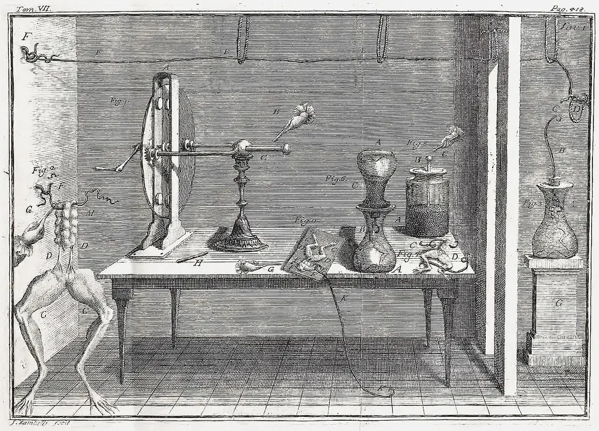
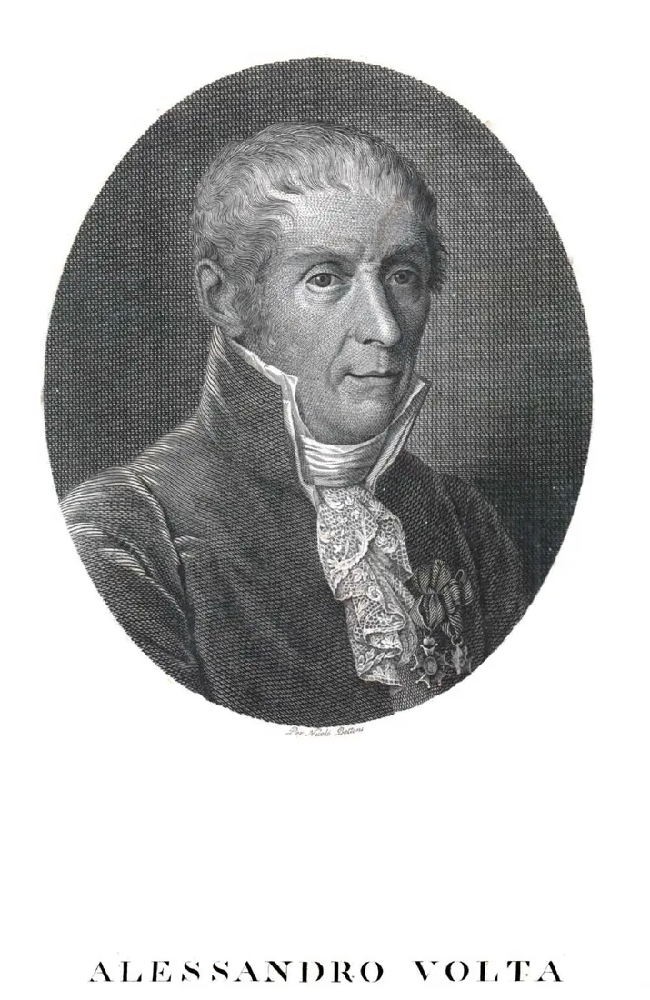
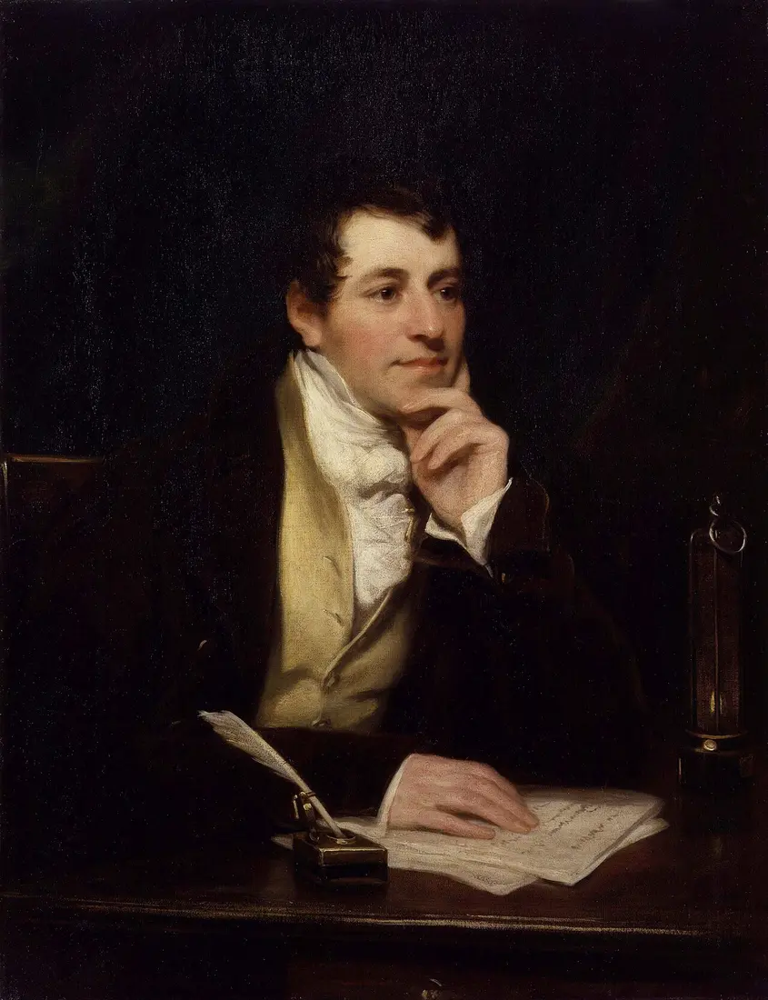
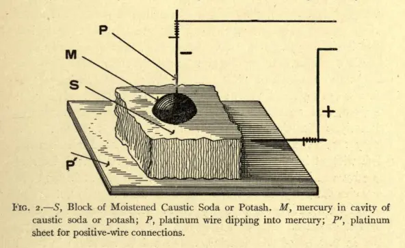
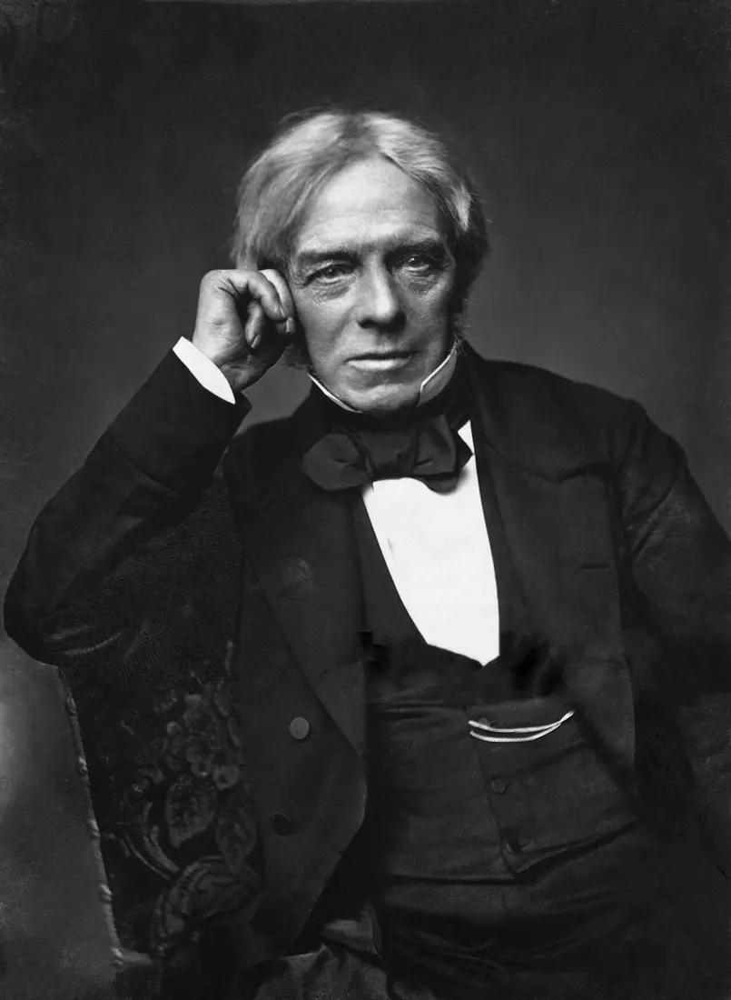
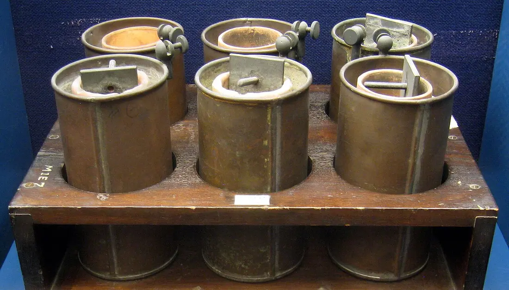
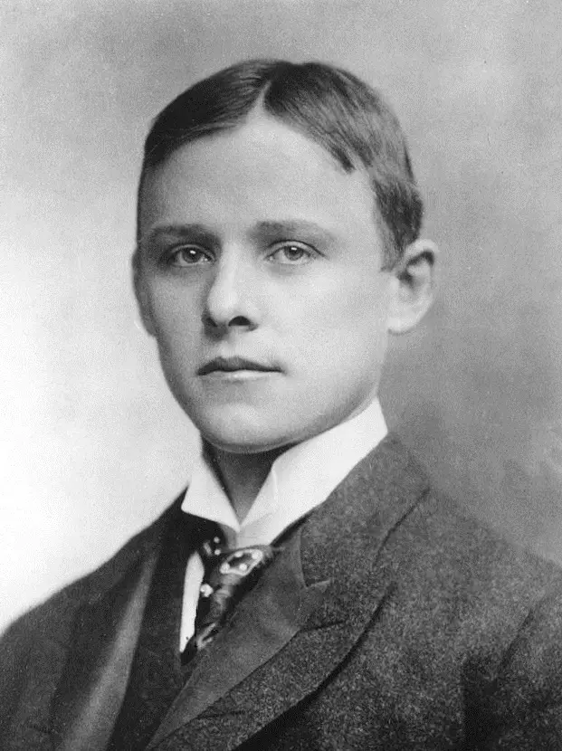
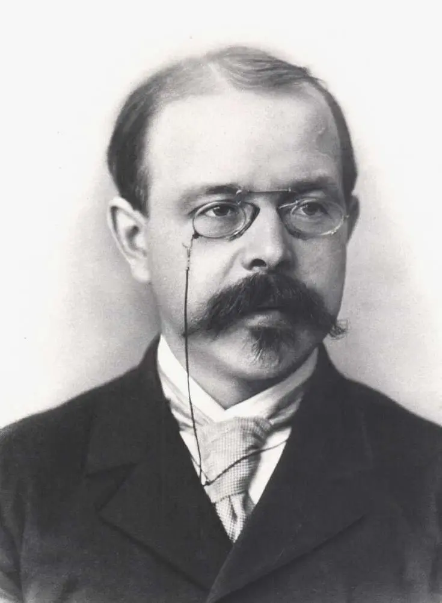
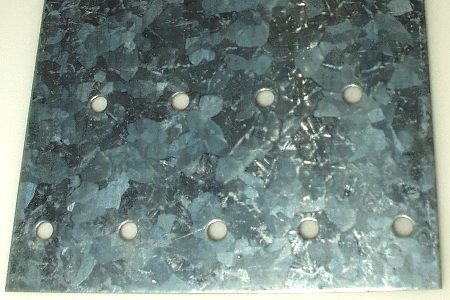

Chemistry · Lesson 12 · Chemical Systems
Gr. 9–12Electrochemistry: When Reactions Push Electrons
Separate oxidation and reduction into two connected beakers, watch electrons flow through a wire while ions cross a salt bridge, test concentration cells with the Nernst equation, and then drive the reaction backward to plate metal onto a target.
Prerequisite: Periodic Table of Elements (ions and valence electrons) and Stoichiometry (mole ratios).
1 · History & Evidence
How electrochemistry was discovered
The story begins with a twitching frog leg and a quarrel between two Italian scientists, and it ends inside every battery and phone on your desk.
Galvani vs. Volta: where does the electricity come from?
In the 1780s, Luigi Galvani noticed that a dissected frog's leg twitched when touched by two different metals. He concluded the electricity was stored inside the animal ("animal electricity"). Alessandro Volta disagreed: he suspected the two different metals were generating the current and the frog was only a sensitive detector. To prove it, Volta stacked discs of zinc and silver (later copper) separated by brine-soaked cardboard. In 1800 he announced this voltaic pile, the first battery—a steady source of current with no animal needed. Galvani was right that nerves use electricity, and Volta was right about the metals, so both of them were partly right.
Spot the connection: Volta's pile is the cell from section 3, repeated in a stack. Zinc is oxidized, a more noble metal is the cathode, and the wet cardboard plays the role of the salt bridge. The unit of electric potential, the volt, is named for him.


Electricity takes molecules apart
Within weeks of Volta's announcement, William Nicholson and Anthony Carlisle used a pile to split water into hydrogen and oxygen—the first electrolysis. In 1807–08, Humphry Davy ran current through molten potash and soda and isolated the metals potassium and sodium for the first time, followed by calcium, magnesium, strontium, and barium. These metals hold their electrons so tightly as ions that no furnace could reduce them; only electricity could. Davy's young assistant was Michael Faraday.


Faraday puts numbers on it
In the 1830s Faraday measured how much substance electrolysis produced and found that the mass deposited is proportional to the total electric charge passed, and that the same charge deposits amounts in proportion to atomic mass divided by ion charge. These are Faraday's laws of electrolysis, the basis of the plating bench in section 4. With the scholar William Whewell, he also coined the words we still use: electrode, electrolyte, anode, cathode, ion.

From theory to technology
Once the rules were known, engineers built practical cells: the Daniell cell (1836) gave steady voltage for telegraphs, Grove's gas battery (1839) was the first fuel cell, Planté's lead–acid battery (1859) was the first rechargeable one, and Leclanché's cell (1866) became the dry cell. Theory caught up too: Arrhenius explained why salt solutions conduct (they hold mobile ions), and Walther Nernst's 1889 equation—used live in section 3—predicts how voltage shifts with concentration and temperature. In 1886, Charles Hall and Paul Héroult independently invented electrolytic aluminium, dropping aluminium from a jewel-priced curiosity to the foil in your kitchen.



Timeline
- Galvani publishes his frog-leg experiments and proposes "animal electricity."
- Volta announces the voltaic pile, the first battery, showing that two metals and a wet conductor make current.
- Nicholson and Carlisle split water into hydrogen and oxygen with current: the first electrolysis.
- Davy isolates potassium and then sodium by electrolysis of molten compounds; calcium, magnesium, strontium and barium follow in 1808.
- Faraday states his laws of electrolysis and names the electrode, ion, anode and cathode (1833–34).
- Daniell builds the zinc–copper cell that powers telegraphs.
- William Grove demonstrates the first fuel cell, combining hydrogen and oxygen.
- Gaston Planté invents the rechargeable lead–acid battery.
- Leclanché's zinc–carbon cell becomes the first widely used dry cell.
- Hall and Héroult independently invent electrolytic aluminium smelting.
- Arrhenius's theory of ionic dissociation explains why salt solutions conduct.
- Walther Nernst derives how cell voltage depends on concentration.
- Lewis Urry develops the alkaline battery at Eveready.
- Akira Yoshino builds the first lithium-ion battery prototype, building on work by Whittingham and Goodenough; Sony sells it in 1991. The three share the 2019 Nobel Prize in Chemistry.
Think about it: Which of these discoveries needed a new tool (the pile) before the new idea could appear? What does that suggest about how science moves?
2 · Core Mechanism
Two half-reactions, one closed circuit
In a zinc–copper cell, zinc atoms oxidize at the anode and release electrons. Copper ions reduce at the cathode and accept them. The salt bridge keeps charge from building up in the solutions while the external wire forces electrons to do work through a load.
Zn(s) → Zn²⁺(aq) + 2e⁻
Loses mass as Zn²⁺ enters solution
Cu²⁺(aq) + 2e⁻ → Cu(s)
Gains mass as copper plates out
Galvanic (Voltaic) Cell
Spontaneous (ΔG < 0, Ecell > 0). Chemical energy pushes electrons out on its own—a battery discharging.
Anode is (−) (oxidation); Cathode is (+) (reduction).
Electrolytic Cell
Non-spontaneous (ΔG > 0, external DC supply > |Ecell|). Electrical energy forces a backward reaction—electroplating or recharging.
Anode is (+) (still oxidation!); Cathode is (−) (still reduction!).
Memory aids: OIL RIG — Oxidation Is Loss, Reduction Is Gain (of electrons). AN OX and a RED CAT — anode = oxidation, reduction = cathode. Those reaction definitions hold in every cell; only the +/− signs swap when an external power supply reverses the flow.
Where does the energy come from? Electrons "fall" from a metal that holds them loosely (like zinc, E° = −0.76 V) to ions that hold them tightly (like copper, E° = +0.34 V). Voltage is the height of that electrical drop per coulomb of charge—so a wider gap in reduction potential makes a stronger battery.
3 · Simulation 1 · Galvanic & Electrolytic Bench
Build and run the cell
Pair any two metals (or pick the same metal at two different concentrations!), toggle the switch or salt bridge, run a load to watch the battery discharge toward equilibrium, or switch to Electrolytic Mode to push electrons backward.
Click any symbol above to inspect how standard potential, electron count, and reaction quotient Q determine cell voltage at 25 °C. At non-standard temperatures, the 0.0592 factor scales proportionally to Kelvin temperature (R·T·ln 10)/F.
Model limits: These values assume dilute solutions where ion concentration approximates chemical activity, zero internal cell resistance, and no gas-evolution side reactions (in water, Mg and Al actually react with water itself before reaching equilibrium).
4 · Simulation 2 · Faraday's Law
Run it backwards: quantitative electroplating
When an external DC supply drives electrolysis, every mole of electrons carries exactly one Faraday of charge (F = 96,485 C/mol). That turns electroplating into pure stoichiometry: count the coulombs Q = I·t, divide by F for moles of electrons, and divide by the ion charge n to find moles and grams of plated metal.
Click any symbol above to test how current, time, atomic mass, and ion charge control deposited mass. Note that real plating baths deposit slightly less than 100% because a fraction of current can split water into H₂ bubbles.
5 · Applications
Electrochemistry in the real world

| System | What gets oxidized / reduced | Why it matters |
|---|---|---|
| Alkaline battery | Zn is oxidized; MnO₂ is reduced. | ~1.5 V per cell. Single-use, because the solid products do not cleanly plate back on recharge. |
| Lead–acid (car) battery | Pb is oxidized; PbO₂ is reduced in sulfuric acid. | ~2.0 V per cell (six in series = 12 V). Huge starter current, and rechargeable. |
| Lithium-ion | Li⁺ ions shuttle between electrodes through electrolyte while electrons take the wire. | High energy per kilogram (phones, EVs). Charging is controlled electrolysis. |
| Hydrogen fuel cell | H₂ is oxidized; O₂ is reduced; liquid water is the only exhaust. | A galvanic cell fed continuous fuel instead of running out like a sealed battery. |
| Water electrolysis | External power splits H₂O into H₂ (at cathode) and O₂ (at anode). | Stores renewable solar or wind electricity as clean hydrogen fuel. |
| Rusting | Fe is oxidized to Fe²⁺ (then rust); O₂ is reduced in moisture. | An unwanted galvanic cell using rainwater and dissolved salts as the "salt bridge." |
| Galvanized steel | Zn (E° −0.76 V) oxidizes in preference to Fe (−0.44 V). | A sacrificial anode: zinc corrodes slowly so bridges, hulls, and nails stay intact. |
6 · Conceptual Checkpoints
Common mix-ups
- "Electrons flow through the salt bridge." No. Electrons use the metal wire; ions cross the salt bridge—anions toward the anode, cations toward the cathode—to keep both beakers electrically neutral.
- "A larger E° number means a more reactive metal." Backwards! Standard tables list reduction potentials. A high positive E° (like Au³⁺ at +1.50 V) means the ion grabs electrons greedily, making gold metal very unreactive.
- "Doubling the reaction coefficients doubles the voltage." Voltage is energy per coulomb of charge, an intensive property. Multiply half-reactions to balance electrons, but never multiply E°.
- "Identical metals always give 0 V." Only when their ion concentrations are also identical. Any concentration ratio (Q ≠ 1) creates a nonzero voltage in a concentration cell.
- "Oxidation always needs oxygen." Historically it began with oxygen reactions, but in modern chemistry oxidation simply means losing electrons. Zinc dissolving in CuSO₄ involves zero oxygen gas.
7 · Design & Mastery
Design questions, calculation drill & exit check
Design questions for class discussion
- Which electrode should be connected to the negative (−) terminal of a voltmeter in a galvanic cell, and why?
- What happens to electron flow if you open the switch? What happens if the switch stays closed but you pull out the salt bridge?
- Why is "oxidation" not the same as "combustion"?
- Using the Reduction Potential Ladder, find the pair of metals with the highest voltage on this list. Why would such a battery be hard to build in an ordinary aqueous beaker?
- A ship's steel hull is bolted to blocks of magnesium. Explain which metal gets oxidized and why crews replace the blocks instead of the hull.
Exit check
Connections